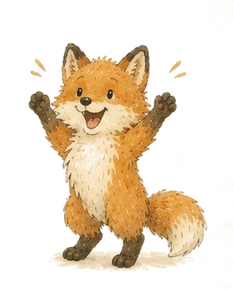

Собираем лесные дары…
Небольшая подсказка
Лови лесные дары
Двигай Лисёнка мышью, пальцем или клавишами ← →. Поймай в корзинку орехи, шишки и ягоды. Камни, ветки и испорченные грибы лучше пропустить.
Лес ждёт
Пауза
Лесные дары собраны
Корзинка полна!
Очки0
Поймано0
Лучшее комбо0
Новый рекорд!
На компьютере: мышь, A/D или ←/→. На телефоне: веди пальцем по поляне.